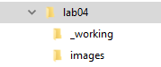

Lab 04 Set Up Tips and Tricks
The Set Up
Now that you have an idea of how you want your site to be structured, you can set it up!
Create a Root Folder
Every website needs a home, locally, where you will work on and develop it.
In your folder create sub folders that make sense for your project.
Here's the folder structure for this site:

Notice, it doesn't need to be complicated. It just needs to be! Set yourself up for success and create a folder stucture that works for you.
For this project, I created a _working folder to house files I used to generated the images on the site. For example, the my draw.io file used to build the map and wireframe.